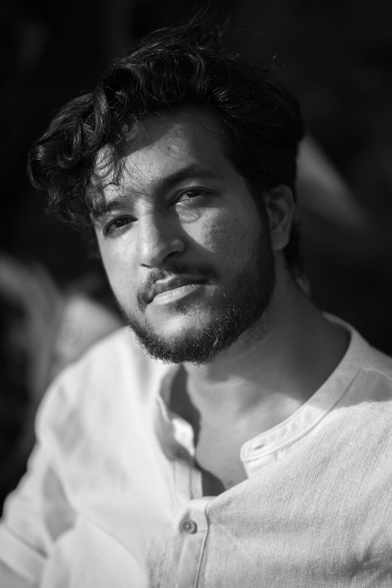
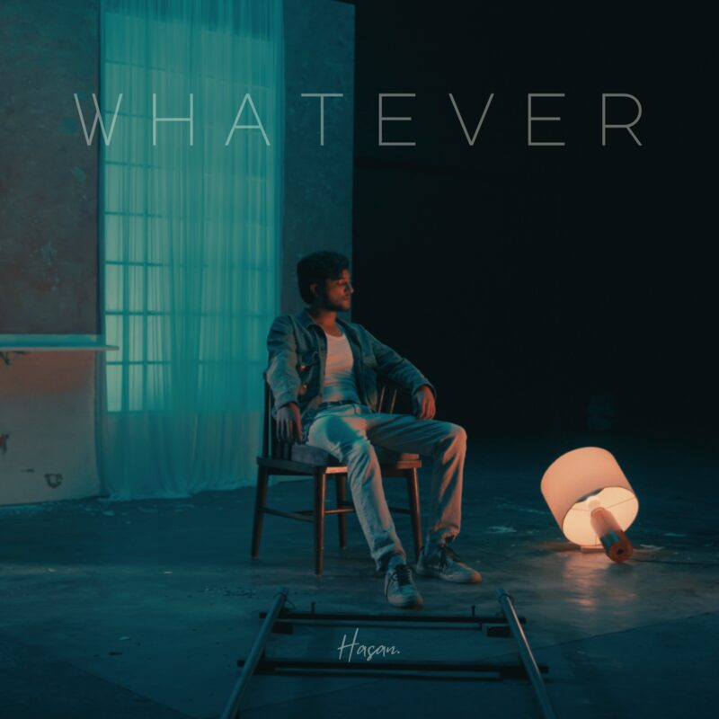

Who is
he?
Mumbai
Indie-folk · rock · alternative
Growing up with the late 2000’s era of pop, rock and hip-hop to moving onto an appreciation for Bollywood and Hindustani classical to now experimenting with indie-folk & alternative songwriting, Hasan.’s debut sound is inspired from a variety of musical influences which currently seems to be synthesised into a unique blend of indie-folk, rock and alternative music along with a conversational style to his lyrics. He continues to draw inspiration from diving deep into his personal experiences that lead him to explore his vulnerability through his music.
Hasan. is a singer-songwriter based out of Mumbai. Having worked extensively on ads and films over the last 5 years, Hasan. is now moving towards a full-time career as an independent musician.
Hasan.’s vulnerable songwriting is elevated by Aman Arakh – long term producer to stellar indie acts like Samar Mehdi, Mocaine, Shikhar, Abhin Joshi, Ashwin Adwani etc.

“‘Whatever’ belongs to that feeling of closure that I sought from the past. A bittersweet, melancholic, yearning ballad that keeps nostalgia in one hand and the future in another. I wrote this song out of desperation to make a relationship work, it was a phase where I felt helpless and couldn’t stop myself from falling into the same unyielding cycles of attachments.”
- Song
- Whatever
- Genre
- Folk-rock, pop
- Sound
- A late 90s/00’s, warm, free flowing rock ballad with ethereal harmonies and an energetic crescendo
Song — Whatever
- Written & performedHasan Baldiwala
- Produced, recorded, mixed & masteredAman Arakh @ Music First Studios, Bhopal
- Drum programmingGaurav Khanna
- BassYohaan Pissurlenker
- KeysTanishk Diwaker
- Acoustic guitarHasan Baldiwala
- Electric guitarWarren Mendonsa
- Additional guitarsShikhar Chaudhary, Aman Arakh
- Backing vocalsDamini Gautam & Brecilla D’Souza
Music video
- CastShumaila Shaikh, Jeet Singh Panwar, Hasan Baldiwala
- Production houseRoop Mahal Prem Gali Studios
- Director & editorOmkar Potdar
- Executive producerShantanu Kardile
- DOP & DINiteesh Jangid
- Production designerVasudha Patni Joshi, Earthwork Studios
- Art directorSwapnil Karnawat
- Costume designerAishwarya Singh
- ChoreographersHenna Raisinghani & Medha Chaudhary
- MakeupShreya Divekar
- BTSHrishikesh Potdar
- GafferShrinivas Shinge
- LightsIdeal Cine
- Camera vendorAccord Pune
- Art teamJagtap ji & team
- PaintersSarthak Jadhav & Kunal Karnawat
- ProductionGanesh Sakhale & team
- LocationPune Film Studio
About the
music video.
The music video directed by Omkar Potdar & Roop Mahal Prem Gali Studios gives a beautiful visual appeal to the sound of Hasan.’s debut indie-rock track. Actors Jeet Singh and Shumaila Shaikh perfectly capture the transformation of a relationship and reflect the internal shift of emotions via movement choreographed by Henna Raisinghani & Medha Chaudhary, graduates of Attakalari Centre for Movement Arts.
Photos.
Photography: Sarika Gangwal. Full-resolution files are in the press kit folder.